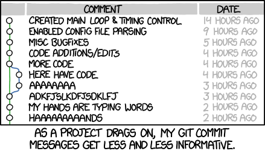

Basics of using Git from the Command Line
| Author(s) |
|
OverviewQuestions:
Objectives:
How can I start tracking my changes with git?
How do I commit changes?
How can I undo a mistake?
Requirements:
Create a repository
Commit a file
Make some changes
Use the log to view the diff
Undo a bad change
Time estimation: 30 minutesSupporting Materials:Published: Jun 16, 2022Last modification: Nov 16, 2023License: Tutorial Content is licensed under Creative Commons Attribution 4.0 International License. The GTN Framework is licensed under MITpurl PURL: https://gxy.io/GTN:T00079version Revision: 6
Version control is a way of tracking the change history of a project. Even if you have never used a version control tool, you’ve probably already done it manually: copying and renaming project folders (“paper-1.doc”, “paper-2.doc”, etc.) is a form of version control. Within bioinformatics (from research, to development, to sysadmin) a lot of us are using git as our primary method of source control for everything we do: notes, slides, tutorials, code, notebooks, ansible, system configuration, and more.
Comment: SourceThis tutorial contains text from this tutorial by Robert Adolf (@rdadolf), which is licensed CC-BY.
Git is a tool that automates and enhances a lot of the tasks that arise when dealing with larger, longer-living, and collaborative projects. It’s also become the common underpinning to many popular online code repositories, GitHub being the most popular.
While it can be used collaboratively, this tutorial focuses on a single-user git repository for the most basic operations.
AgendaIn this tutorial, you will learn how to create a git repo, and begin working with it.
Why should you use version control?
If you ask 10 people, you’ll get 10 different answers, but one of the commonalities is that most people don’t realize how integral it is to their development process until they’ve started using it. Still, for the sake of argument, here are some highlights:
- You can undo anything: Git provides a complete history of every change that has ever been made to your project, timestamped, commented, and attributed. If something breaks, you always have the choice of going back to a previous tate.
- You won’t need to keep undo-ing things: One of the advantages of using git properly is that by keeping new changes separate from a stable base, you tend to avoid the massive rollbacks associated with constantly tinkering with a single code.
- You can identify exactly when and where changes were made (and by whom!): Git allows you to pinpoint when a particular piece of code was changed, so finding what other pieces of code a bug might affect or figuring out why a certain expression was added is easy.
- Git forces teams to face conflicts directly: On a team-based project, many people are often working with the same code. By having a tool which understands when and where files were changed, it’s easy to see when changes might conflict with each other. While it might seem troublesome sometimes to have to deal with conflicts, the alternative—not knowing there’s a conflict—is much more insidious.
Pre-requisites
You will need to install git, if you have not done so already.
Setting up a Repository
Let’s create a new repository.
Hands-on: Create a Repository
Make a new directory where you will store your files, and navigate into it.
Input: Bashmkdir git-tutorial; cd git-tutorial;Create or “initialise” the
gitrepository with thegit initcommand.Input: Bashgit initOutputInitialized empty Git repository in /tmp/project/.git/
This has created a folder .git in your project directory, here is where git stores all of it’s data that it needs to track repository changes over time. It’s not terribly interesting yet though!
Hands-on: What's the status
You can always check the status of a repository with
git statusInput: Bashgit statusOutputOn branch main No commits yet nothing to commit (create/copy files and use "git add" to track)
Adding Files
Let’s add our first file, often a (pretty empty) readme file.
Hands-on: What's the status
Create a new file,
readme.mdwith some basic contentInput: Bashecho "My Project" > readme.mdAdd a file with
git add. This adds it to git’s staging area to be committed.Input: Bashgit add readme.mdCommit the file! This will add it to git’s log.
It depends a lot on the community, some have specific style guides they enforce, some don’t, but in general
- Keep the description short (<72 chars) and descriptive.
- If you need, provide a long description as well, explaining your changes. (Use
git commitwithout the-mflag!) A lot has been written about good commit messages, search the internet and find ideas for what you think makes a good commit message!And beware of the trap we all fall into sometimes, unhelpful commit messages  Even your author is very, very guilty of this, but you can do better!
Input: Bashgit commit -m "Add readme"Output[main (root-commit) f5ec14f] Add readme 1 file changed, 1 insertion(+) create mode 100644 readme.mdQuestion: Is there anything left to do? Check the statusCheck
git statusto see if there’s anything else left to resolve.$ git status On branch main nothing to commit, working tree clean
{kind=link}
Congratulations! You’ve made your first commit. The output of the commit command lists everything you’ve just done:
[main (root-commit) f5ec14f] Add readme
1 file changed, 1 insertion(+)
create mode 100644 readme.md
f5ec14f is the commit id, every commit you make is given a hash which uniquely refers to that specific commit. Next we see our commit message Add readme, a brief mention of how many files we’ve changed, and how many insertions or deletions we’ve made to the text, and lastly which files we’ve added.
Exercise: Make some more commits
Hands-on: Make some more commits
Add your name to the
readme.mdand commit your changes.Input: Bashecho "Author: hexylena" >> readme.md git add readme.md git commit -m 'Add author name'Make up a project description, add it to the readme, and commit.
Input: Bashecho "This project enables stakeholders to experience synergistic effects and increase link up opportunities to improve quarterly and YOY ROI.\n" >> readme.md git add readme.md git commit -m 'Add project description'Pick a license for your project, and mention it in the
readme.md, and commit.Input: Bashecho "# License\nAGPL-3.0" >> readme.md git add readme.md git commit -m 'Add project license'
After this step you should have ~3 commits to work with!
Logs
One of the most helpful things about git is that, if you have written good commit messages, you can tell what you did and when!
Hands-on: Check the Receipts
Check the
logwithgit log. Notice that you can see each commit in reverse chronological order (newest at top), who made the commit, when, and what the commit message was.Input: Bashgit logInput: Outputcommit 5d05eb3ec22fd49282b585c60ef8f983d68c2fd7 Author: Helena Rasche <hxr@hx42.org> Date: Mon Jun 13 12:13:21 2022 +0200 Add project license commit 62f974ec5f538232f65b016cf073815349364efa Author: Helena Rasche <hxr@hx42.org> Date: Mon Jun 13 12:13:16 2022 +0200 Add project description commit 10355c019c04052c15a95a817de04f9ea0ec336c Author: Helena Rasche <hxr@hx42.org> Date: Mon Jun 13 12:13:11 2022 +0200 Add author name commit f5ec14f05384d76812fc0576df5e4af79336f4e6 Author: Helena Rasche <hxr@hx42.org> Date: Mon Jun 13 11:59:23 2022 +0200 Add readme
The output of git log is a great way to help you remember what you were doing.
Hands-on: `git log -p`
- Use
git log -pto see the log, along with which lines were changed in each commit.
But currently this log is pretty boring, so let’s replace a line and see how that looks.
Hands-on: Replace a line
Update your project description in the
readme.md, you’ve been told you need to support completely different features.Input: Bashsed -i s'/enables.*ROI/creates baking recipes/g' readme.md git add readme.md git commit -m 'Update project description'Check what happened with the
git log -p:Output: Output$ git log -p commit 416a121dfcda14de0c2cb181f298b2c08950475f (HEAD -> main) Author: Helena Rasche <hxr@hx42.org> Date: Mon Jun 13 12:18:00 2022 +0200 Update project description diff --git a/readme.md b/readme.md index befc0c9..3b8899e 100644 --- a/readme.md +++ b/readme.md @@ -1,6 +1,6 @@ My Project Author: hexylena -This project enables stakeholders to experience synergistic effects and increase link up opportunities to improve quarterly and YOY ROI. +This project creates baking recipes. # License AGPL-3.0This is a diff, a comparison between two versions of a file.
If you haven’t worked with diffs before, this can be something quite new or different.
If we have two files, let’s say a grocery list, in two files. We’ll call them ‘a’ and ‘b’.
Input: Old$ cat old
🍎
🍐
🍊
🍋
🍒
🥑Output: New$ cat new
🍎
🍐
🍊
🍋
🍍
🥑We can see that they have some different entries. We’ve removed 🍒 because they’re awful, and replaced them with an 🍍
Diff lets us compare these files
$ diff old new
5c5
< 🍒
---
> 🍍Here we see that 🍒 is only in a, and 🍍 is only in b. But otherwise the files are identical.
There are a couple different formats to diffs, one is the ‘unified diff’
$ diff -U2 old new
--- old 2022-02-16 14:06:19.697132568 +0100
+++ new 2022-02-16 14:06:36.340962616 +0100
@@ -3,4 +3,4 @@
🍊
🍋
-🍒
+🍍
🥑This is basically what you see in the training materials which gives you a lot of context about the changes:
--- oldis the ‘old’ file in our view+++ newis the ‘new’ file- @@ these lines tell us where the change occurs and how many lines are added or removed.
- Lines starting with a - are removed from our ‘new’ file
- Lines with a + have been added.
So when you go to apply these diffs to your files in the training:
- Ignore the header
- Remove lines starting with - from your file
- Add lines starting with + to your file
The other lines (🍊/🍋 and 🥑) above just provide “context”, they help you know where a change belongs in a file, but should not be edited when you’re making the above change. Given the above diff, you would find a line with a 🍒, and replace it with a 🍍
Added & Removed Lines
Removals are very easy to spot, we just have removed lines
--- old 2022-02-16 14:06:19.697132568 +0100
+++ new 2022-02-16 14:10:14.370722802 +0100
@@ -4,3 +4,2 @@
🍋
🍒
-🥑And additions likewise are very easy, just add a new line, between the other lines in your file.
--- old 2022-02-16 14:06:19.697132568 +0100
+++ new 2022-02-16 14:11:11.422135393 +0100
@@ -1,3 +1,4 @@
🍎
+🍍
🍐
🍊Completely new files
Completely new files look a bit different, there the “old” file is
/dev/null, the empty file in a Linux machine.$ diff -U2 /dev/null old
--- /dev/null 2022-02-15 11:47:16.100000270 +0100
+++ old 2022-02-16 14:06:19.697132568 +0100
@@ -0,0 +1,6 @@
+🍎
+🍐
+🍊
+🍋
+🍒
+🥑And removed files are similar, except with the new file being /dev/null
--- old 2022-02-16 14:06:19.697132568 +0100
+++ /dev/null 2022-02-15 11:47:16.100000270 +0100
@@ -1,6 +0,0 @@
-🍎
-🍐
-🍊
-🍋
-🍒
-🥑
Who did that? git blame to the rescue
If you want to know who changed a specific line of a file, you can use git blame to find out it was probably your fault (as most of us experience when we check the logs.)
Input: Bashgit blame readme.md
Input: Output^f5ec14f (Helena Rasche 2022-06-13 11:59:23 +0200 1) My Project 10355c01 (Helena Rasche 2022-06-13 12:13:11 +0200 2) Author: hexylena 416a121d (Helena Rasche 2022-06-13 12:18:00 +0200 3) This project creates baking recipes. 62f974ec (Helena Rasche 2022-06-13 12:13:16 +0200 4) 5d05eb3e (Helena Rasche 2022-06-13 12:13:21 +0200 5) # License 5d05eb3e (Helena Rasche 2022-06-13 12:13:21 +0200 6) AGPL-3.0here we can see for every line: which commit last affected it, who made that commit, and when.
Branching
Git has the concept of branches which are most often used to manage development over time, before it’s considered final. Until now you’ve seen main in your commits and commit logs (or maybe master if your git installation is a bit older.)
Oftentimes you’ll see this pattern:
- There is a main branch with a lot of history
- You want to test out a new option, new configuration, new script you’re working on
- So you make a branch
- Work on that branch
- And merge it back into the
mainbranch, once it’s done.
This is especially relevant for any project that is shared with others, has a public view, or a deployed version of the code. There you don’t want to affect anyone else using the project, or you don’t want to affect the production deployment, until you’re done making your changes.
Hands-on: Create a new branch
git switch -c <branch>is the command used to create a new branch and switch to it.Input: Bashgit switch -c testInput: OutputSwitched to a new branch 'test'
If you look around, you’ll notice everything looks exactly the same! But in fact we are now on a different branch:
Hands-on: See available branches
git branchlists our available branches, and puts an asterisk next to the one we’re currently on.Input: Bashgit branchInput: Output```bash main
- test ```
We’re now on the test branch, so let’s make a commit.
Hands-on: Add a new file
Add a new file, let’s call it
docs.md. Write something into it, it doesn’t matter much what.Input: Bashecho "# Project Documentation" > docs.mdAdd it, commit it.
Input: Bashgit add docs.md git commit -m "Added documentation"
This file now only exists on the testing branch.
Hands-on: Try Switching Branches
Try switching back and forth between the
mainandtestbranches, and check what’s available on each!Input: Bashgit branchInput: Bashgit switch main lsInput: Outputreadme.mdInput: Bashgit switch test lsInput: Outputdocs.md readme.md
Each branch has a different view of the repository, and might have different changes on it. Branches are really useful to keep track of work in progress, until it’s done. In a single user environment however, most people often don’t use them, but once you’re collaborating with other’s they’re incredibly important!
Merging
Once you’re done with a branch, you can merge it into the main branch. This will take all of the work you did on that branch, and make it part of the main branch.
First, let’s compare the two branches, to see what changed.
Hands-on: Replacing argv.
Compare your current branch against the
mainbranch withgit diff mainInput: Bashgit diff mainInput: Outputdiff --git a/docs.md b/docs.md new file mode 100644 index 0000000..384aaaa --- /dev/null +++ b/docs.md @@ -0,0 +1 @@ +# Project Documentation
We can see the output shows all of our changes compared to the main branch and it looks like what we want, so, let’s merge it in.
Hands-on: Merge the `test` branch into `main`
Switch to the main branch
Input: Bashgit switch mainMerge in the test branch
Input: Bashgit merge testInput: OutputUpdating 416a121..9a3387d Fast-forward docs.md | 1 + 1 file changed, 1 insertion(+) create mode 100644 docs.md
This has merged all of the changes you made on the test branch into the main branch.
Hands-on: Check the history
- Check
git log -pagain to see the history.
Undo! Revert!
Oh no, you’ve decided you liked your original project description better. Let’s find that commit and revert it.
Hands-on: Find and revert the bad commit
Find the commit you want to revert, e.g. with
git log, find the one named “Update project description” (or similar.)Input: Bashgit logWe can use the
git revertcommand to undo this commit.Input: Bashgit revert 416a121dfcda14de0c2cb181f298b2c08950475f
This generates a new commit, which reverts the older commit (and probably puts you in a text editor to edit the commit message). This is not the only way to undo mistakes, but probably the easiest.
If you check your git log you’ll see the change was undone in a second commit, reverting the first. So if you just look at the current files it appears we never undid it, but within the logs we can see the undo step.
With that you’ve got enough skills to track your own data/code/etc with git!